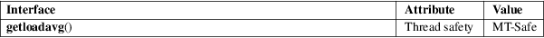

getloadavg − get system load averages
Standard C library (libc, −lc)
#include <stdlib.h>
int getloadavg(double loadavg[], int nelem);
Feature Test Macro Requirements for glibc (see feature_test_macros(7)):
getloadavg():
Since glibc 2.19:
_DEFAULT_SOURCE
In glibc up to and including 2.19:
_BSD_SOURCE
The getloadavg() function returns the number of processes in the system run queue averaged over various periods of time. Up to nelem samples are retrieved and assigned to successive elements of loadavg[]. The system imposes a maximum of 3 samples, representing averages over the last 1, 5, and 15 minutes, respectively.
If the load average was unobtainable, −1 is returned; otherwise, the number of samples actually retrieved is returned.
For an explanation of the terms used in this section, see attributes(7).

BSD.
4.3BSD-Reno, Solaris. glibc 2.2.
uptime(1), proc(5)